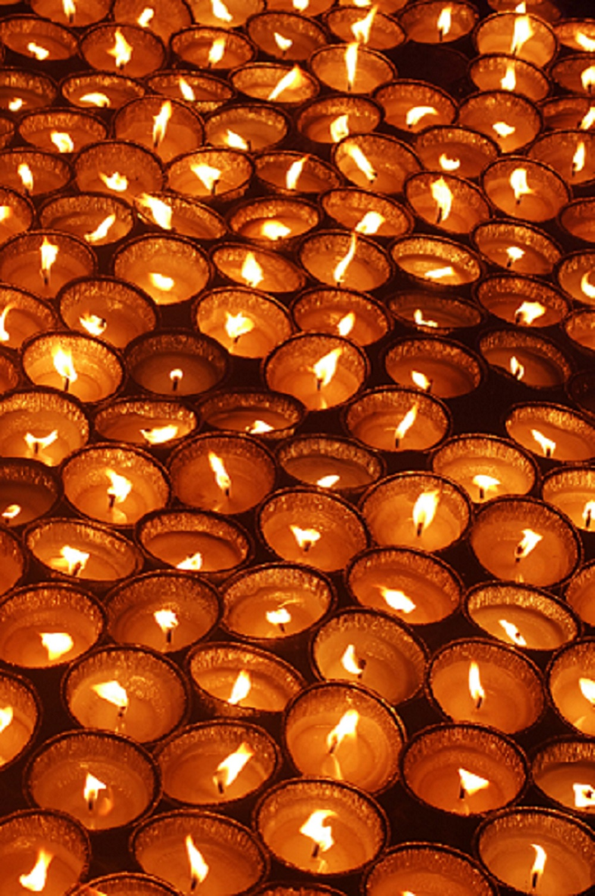

Diwali, or Dipawali, is India's biggest and most important festival
and holiday of the year. The festival gets its name from the row
(avali) of clay lamps (deepa) that Indians light outside their homes
to symbolize the inner light that protects from spiritual darkness.
This festival is as important to Hindus as the Christmas holiday is to
Christians.Over the centuries, Diwali has become a national festival
that's also enjoyed by non-Hindu communities. For instance, in
Jainism, Diwali marks the nirvana, or spiritual awakening, of Lord
Mahavira on October 15, 527 B.C.; in Sikhism, it honors the day that
Guru Hargobind Ji, the Sixth Sikh Guru, was freed from imprisonment.
Buddhists in India celebrate Diwali as well.
|

|